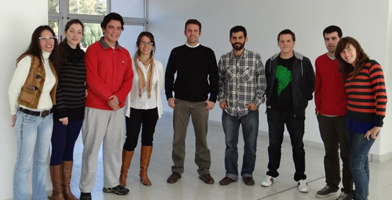
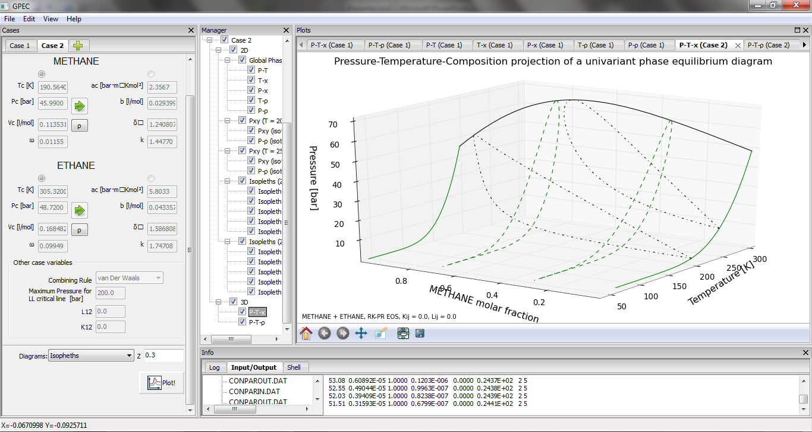
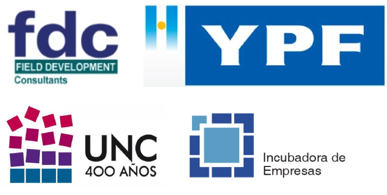

Phasety (en 5 minutos)
Incubadora de Empresas
Universidad Nacional de Córdoba
4 de julio de 2013
Software y consultoría en termodinámica para la industria del petróleo
Crear EBTs a partir de conocimiento especializado
No era común en Argentina
Pero ahora hay condiciones propicias
No era común en Argentina
Pero ahora hay condiciones propicias
¿Qué sabemos hacer?
- Modelado termodinámico
- Métodos numéricos
- ¡Gráficos, muchos gráficos!
- Software científico... apto para petroleros
¿Quiénes somos?
- Martín Cismondi, doctor en ingenieria Quimica, especialista en modelado termodinámico reconocido internacionalmente
- Martín Gaitan, experto en ingeniería de software
- Equipo de profesionales con talento, que comparten el entusiasmo
Caso de éxito: GPEC
- Software para el cálculo y graficación de diagramas de fase de sistemas binarios
- Tesis doctoral de Cismondi y refactoring de Gaitán
- GPEC es usado en muchas universidades y grupos de investigación del mundo
- Experiencia de trabajo
¿Hacia dónde vamos?
PVT-Sur: El primer simulador PVT de Latinoamérica
Un simulador PVT es una herramienta para la toma de decisiones de ingenieria en petróleo. Ejemplo: dimensionamiento de plantas de superificie, estrategia de producción, prevención de formación de sólidos, etc.
No estamos solos
FDC
Queremos...
Ser la "Calsep" de Sudámerica
Ser una EBT sustentable (trabajo de calidad)
Aportar a la soberanía tecnológica del país
Ser una EBT sustentable (trabajo de calidad)
Aportar a la soberanía tecnológica del país